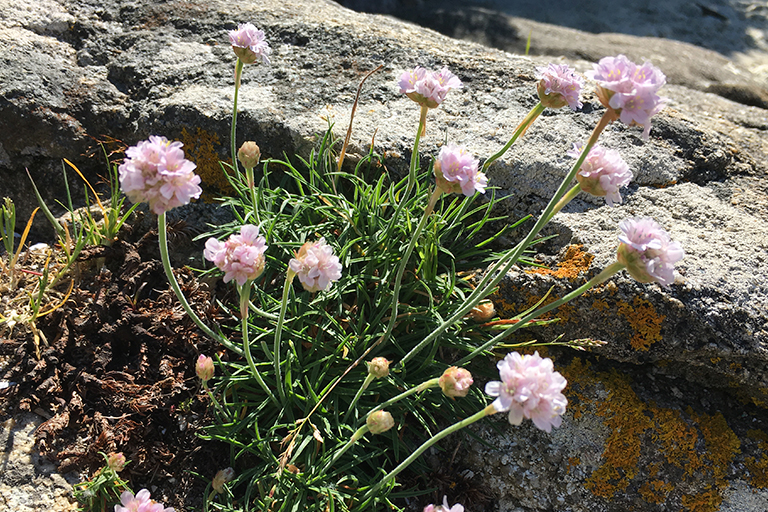
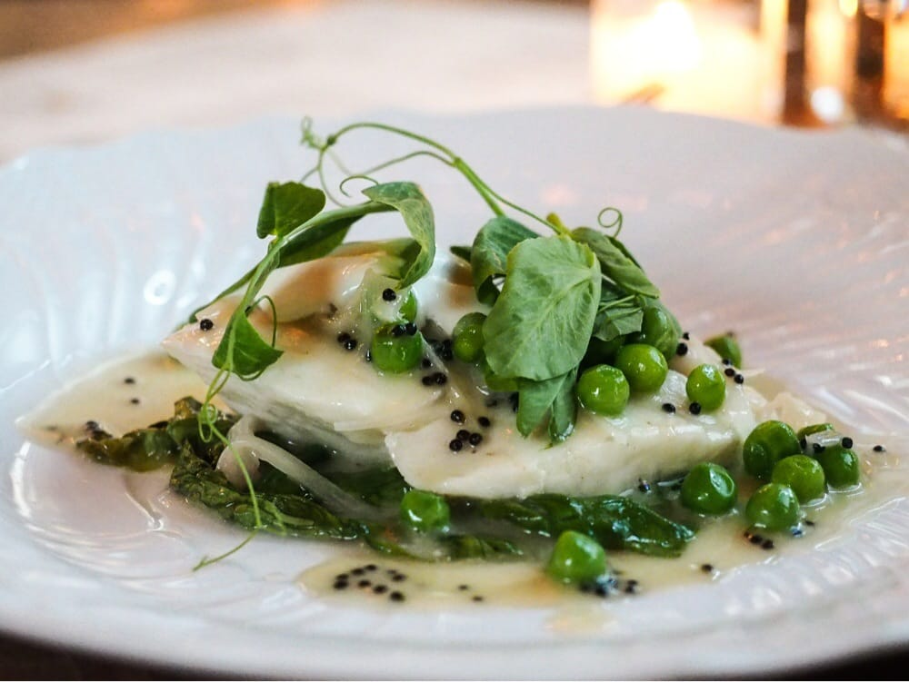
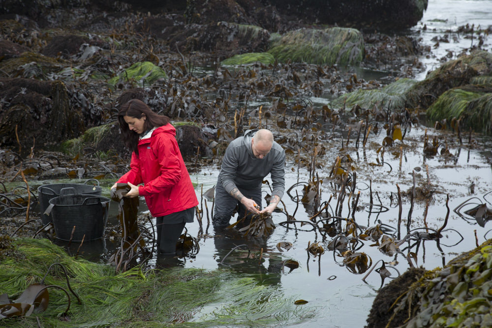
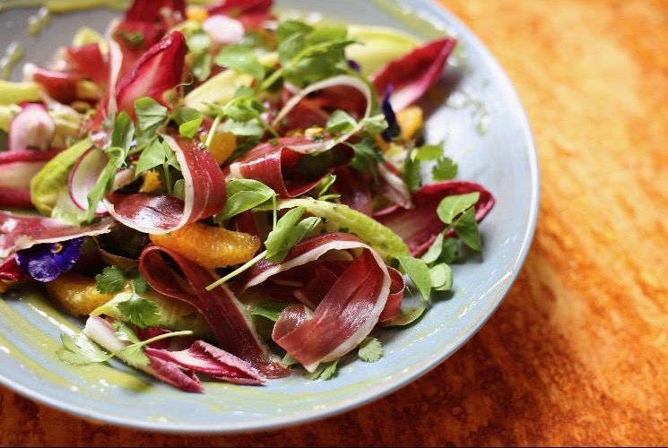

4th Wild & Feral Food Week 2018
Check out these restaurants, farms, & foragers 18—27 May, 2018!
The Asheville-based ecotour company and educational organization has nine foraging tours and one class scheduled for Wild and Feral Food Week. Tour participants can have their finds prepared at one of five participating local restaurants.
“Wildman” Steve Brill has been foraging for over 30 years! He will be leading educational foraging tours throughout the New York area, including Brooklyn, Manhattan, and Long Island.
For the past five years, Richard Mawby has been transitioning to a wilder and wilder diet in the East Midlands, UK. Through Forage Frolics, he hosts small, personalized courses on foraging and reconnecting with nature.
Thalli Foods is a full-time foraging venture in Ithaca, NY. Their extensive supply list consists of over 50 freshly foraged species, in addition to various dry stock.
Matthew Rooney of Mushroom Table is a biodynamic mushroom grower, forager and ecologist based in Essex, UK. Mushroom Foods will be hosting a Spring Foraging and Wild Cooking Workshop.
Chef Davide Atzeni features foraged foods in Fradis Minoris, his sea-side restaurant in Sardinia, Italy.
This Berkeley-based chocolate company distills essential oils from wild plants and incorporates them into craft chocolates. This month features: Pink Peppercorn & Pink Salt (Coconut Mylk), Absinthe: Dark Chocolate with Anise and Wildcrafted Mugwort (Dark), White Sage Bar (Coconut Mylk), Vintage Rootbeer Bar with Wild Cherry Bark & Birch (Dark), Crowberry & Salted Chili Pepper (Dark) For 25% off the first month of a monthly subscription, use coupon code “foraged” at www.endorfinfoods.com/subscriptions
This Singaporean cocktail bar is committed to using local and regional produce. To celebrate wild foods, they are featuring a new menu with wild items included in drinks, such as gotu kola (centella asiatica)

BCulinaryLab is a research department within the Basque Culinary Center that conducts research on fermentation and wild plants. Graduate student Blanca del Noval will host a masterclass consisting of a plant identification walk and tasting for other culinary students.
This San Francisco foraging company supplies over 200 species of plants and fungi, largely to fine dining establishments. Founder Bryan Jessop also offer wild food surveys of farms and other private lands.
This restaurant in Salento, Italy is run by three brothers that try to build upon local traditions of fermentation and conservation of food. They collect plants from the countryside and seaside, featuring these local, raw materials on their restaurant menu.
Accursio Lota of Solare values the raw materials that come from the land and sea. He plans to feature the simplicity of their flavors in the dishes of his restaurant during Wild & Feral Food Week.
Chef Geoffrey Deetz and his wife Quynh Nhu serve traditional, authentic dishes from all regions of Viet Nam. For one evening during Wild & Feral Food Week, they plan to feature hand rolled spring rolls utilizing fresh greens, weeds and herbs.

This restaurant in Venice Beach presents a contemporary take on Italian and southern European flavors. They will offer a prix fixe four-course menu featuring local wild and feral foods.
Luca Cella is a forager and fisherman who sells preserved wild vegetables and fish. He offers foraging tours in Palerno, Italy through Aura Cilento.
Food Evolutions is a cooperative effort aimed at applying experimental archaeology to address diet, a critical world health issue. Bill Schindler and Kevin Thornton will be hosting a foraging tour to celebrate Wild & Feral Food Week.
Chef Elijah Holland’s new Shanghai restaurant, Botanik, will be strongly influenced by wild and feral foods. He is also involved in the wild and feral distillery Manly Spirits.
This company produces the only gin from Islay, Scotland. The Botanist incorporates 22 wild, hand-foraged botanicals. The Botanist is holding a foraging event for bartenders at Wildhawk in the San Francisco Mission District on 17 May.
Manoella ‘Manu’ Buffara of Restaurante Manu has swiftly become one of Latin America’s hottest young chefs by celebrating the diverse natural produce of the Paraná region in beautifully presented, contemporary dishes.
Portland-based restaurant Ray celebrates Israel’s diverse cultures and culinary traditions with a modern, seasonal menu imbued with a straightforward, full-flavored style. They will offer two dishes on their weekly menu and showcase foraged finds on social media.
Kobus van der Merwe’s restaurant on the Cape West Coast highlights his love for the landscape and people of South Africa. Their seven-course, seafood-focused tasting menu regularly features seasonal veldkos (wild foods) picked daily from the coastal village of Paternoster. Dishes on their autumn menu will include wild harvested herbs, seaweeds, and succulents.
Chef Chris Kronner is the chef of the recently re-launched Henry’s at the Graduate Berkeley where he serves American comfort food to high levels of care and consideration. During Wild & Feral Food Week, the restaurant will offer select dishes featuring foraged ingredients.
Nordic Food Lab is a non-profit, open-source organization that investigates food diversity and deliciousness. They combine scientific and humanistic approaches with global culinary techniques to explore the edible potential of the Nordic region. On 24 May, they will offer a Wild Aperitivo with lectures, a foraging walk, and tastings of food and cocktails made with wild and feral ingredients. Tickets available on Billetto.
Italian chef Valeria Mosca is a pioneer in the collection, conservation, and cooking of wild food. In partnership with the Faenza Art District, she will offer an urban foraging walk on May 19.
Hoggorm is a small pizza and wine bar in Bergen, Norway. Their delicious pizzas feature toppings delivered from small, local Norwegian farmers. For Wild & Feral Food Week, they will be serving a pizza with foraged wild ramson.
Lysverket is a restaurant and bar in Bergen, Norway presenting a modern Norwegian cuisine with focus on local seafood. For Wild & Feral Food Week, they will be serving a special dish with foraged elements: raw mackerel with grilled strawberry, cucumber marinated in pine vinegar and squid ink, pine, and woodsorrel.
Offering wild and feral foods daily, Gjelina is a restaurant in Venice, California with a rustic, creative style that marries Californian and Italian cuisine perfectly. Their current menu includes ramps with brown butter and pecorino with Meyer Lemon as a side. Pickled nasturtium seed pods are on the charcuterie plate. Wild rice foraged by canoe has been on and off Gjelina’s menu for the last month, appearing alongside soup or stew.
MTN is a hip Japanese gastropub with some California flair. MTN will be creating a wild harvested seaweed salad with Sea Palm, Ribbon Kelp, and Dwarf Rockweed harvested by a forager from north of Big Sur.
Seaquoia Seaweeds forages up to 14 species of wild California seaweed and kelp from the central and northern coast of California. They offer foraging experiences through the platform Airbnb entitled ’Tide Pool Exploring and Seaweed Foraging” at Pigeon Point Lighthouse in Pescadero, CA.

SingleThread Farm in Healdsburg, California consists of a greenhouse, shade structures, loamy fields, chicken coops, an heirloom fruit orchard, olive trees, bee hives, and a cattle paddock all surrounded by Cabernet Sauvignon, Zinfandel, and Chardonnay vines. The farm supplies vegetables, fruit, herbs, flowers, honey, eggs, and olive oil to their restaurant kitchen. Wild foods are featured daily on the restaurant menu.

Chef Tom Cockerill will be catering meals with foraged ingredients, including tortellini with hogweed shoots and sushi garnished with wild allium flowers, forget-me-nots, and other wild edibles.
Chef Rosio offers a short, constantly changing a la carte menu of snacks and smaller bites, larger plates, deserts, and daily specials, often with wild and feral ingredients. During Wild and Feral Food Week, some dishes will feature garlic mustard, gooseberries, cepes, and other seasonal wild foods. For reservations, visit https://sanchez.dinesuperb.com/